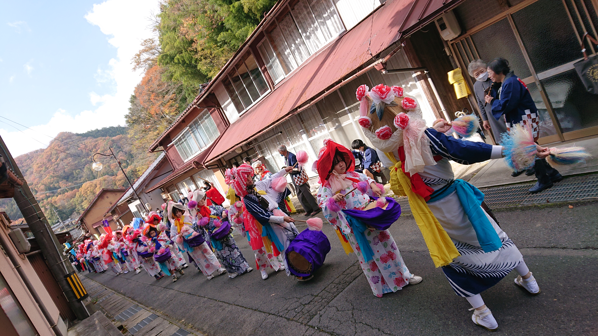
🏮 出雲の郷土芸能はやしこ
「はやしこ」は浴衣姿の男女が花笠をかぶり、太鼓と笛で奏でる軽やかな旋律に乗って、踊り、練り歩く出雲地方に伝わる郷土芸能です。
色鮮やかな衣装と花笠が街道を彩り、毎年11月14日の「波多神社 秋の例大祭」で神前に奉納される、地域の誇りある伝統です。
.jpg)
豊かな自然に抱かれ、温かな人々が紡ぐ、歴史と伝統芸能の里。
奥深い森にたたずむ「波多神社」と、受け継がれる地域の絆をご紹介します。
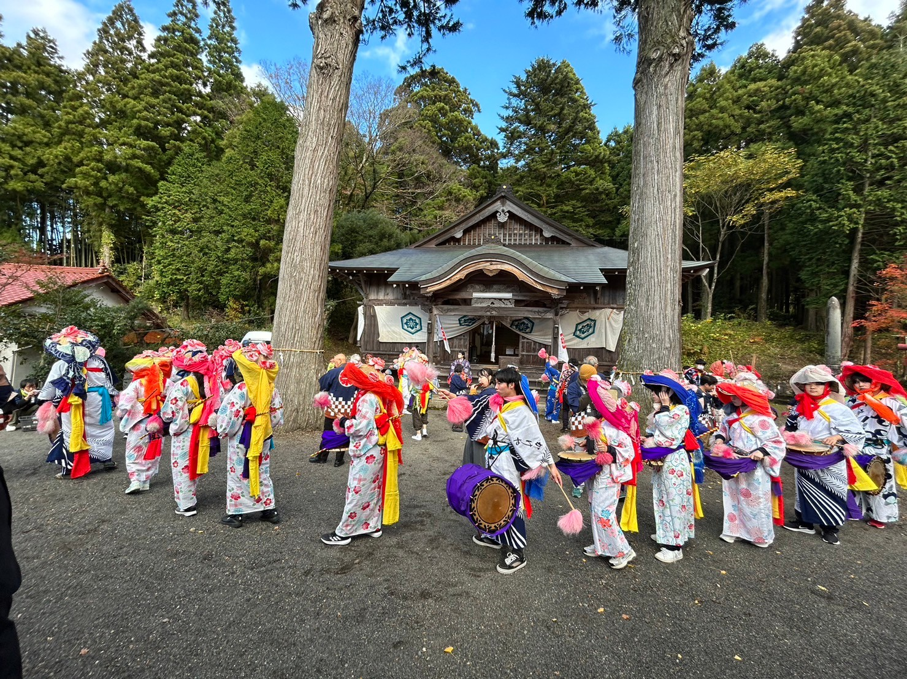
波多神社 はやしこ奉納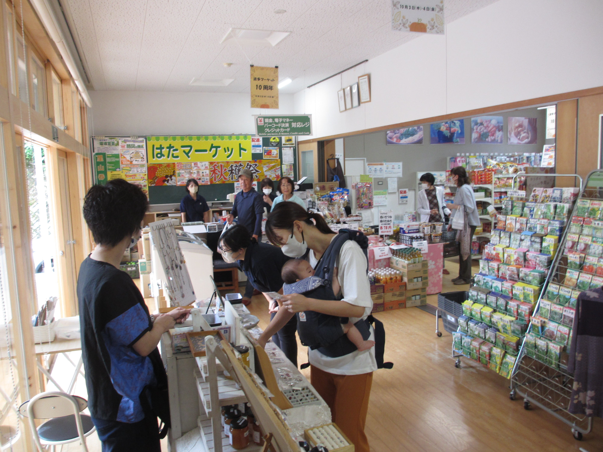
温もり集う はたマーケット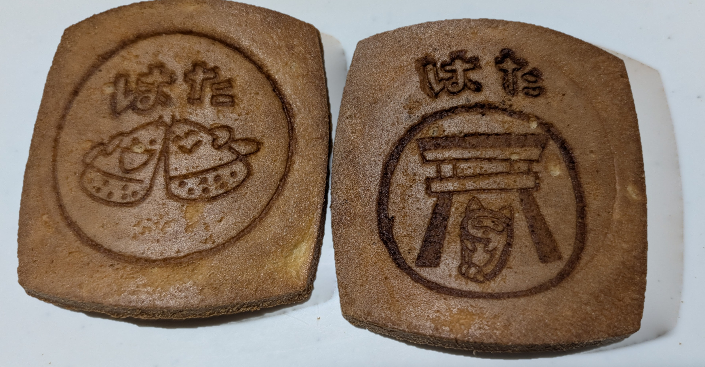
名物 はたせんべい中国山地の山並みに抱かれた、温もりに満ちた里山
波多（はた）は、島根県雲南市掛合町の南西部に位置する、自然豊かで澄んだ空気と清らかな水に恵まれた山里の地域です。
そして何よりも、この地を訪れる人を笑顔で迎えてくれる人が温かい温もりのある絆が、波多のいちばんの自慢です。
四方を豊かな森に囲まれ、四季折々に美しい表情を見せる里山。澄んだ渓流のせせらぎや、悠久の時を刻む巨樹が心を優しく包み込みます。
地域の人々が互いを思いやり、笑顔で挨拶を交わすあたたかさ。マーケットや温泉に集う地元の方々の温かい人情に、誰もがほっと癒やされます。
伝統芸能・温泉・笑顔の交流拠点・愛されるふるさとの味

🏮 出雲の郷土芸能「はやしこ」は浴衣姿の男女が花笠をかぶり、太鼓と笛で奏でる軽やかな旋律に乗って、踊り、練り歩く出雲地方に伝わる郷土芸能です。
色鮮やかな衣装と花笠が街道を彩り、毎年11月14日の「波多神社 秋の例大祭」で神前に奉納される、地域の誇りある伝統です。
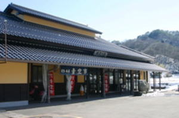
♨️ 温浴・憩いの場心も体も芯からぽかぽかに温まる波多の天然温泉「満壽の湯（ますのゆ）」。地元の方々にも旅人にも親しまれる癒やしの空間です。
ゆったりとお湯に浸かりながら、地域の方々と気さくに交わす世間話も楽しみのひとつ。人の温かさを肌で感じられるスポットです。
旧波多小学校の温もりある校舎を活用した「波多交流センター」内にある、地域の笑顔の拠点「はたマーケット」。
新鮮な地元野菜や日用品が揃い、収穫祭などのイベントには赤ちゃんからお年寄りまでみんなが集い、笑顔と会話が広がります。
一口食べると香ばしさと優しい甘みが広がる、地元で長く愛され続ける銘菓「はたせんべい」。
おせんべいには「波多神社」の鳥居や「はやしこ」の愛らしいデザインが焼印されています！軽くて持ち運びやすく、お土産に大人気です。
鬱蒼とした深い杜に抱かれ、悠久の歴史と人々の祈りを今に伝える「波多神社」。
境内に一歩足を踏み入れれば、日常を忘れさせる静寂と清廉な空気が満ちています。
波多神社は、古くから波多の里を見守り続けてきた由緒ある古社です。 苔むした石段を登ると、太古の息吹を感じさせる杉の巨木が迎えてくれます。 昼の木漏れ日、秋の紅葉と例大祭、そして冬の雪景色と、四季折々に神々しく美しい姿を見せ、訪れる人々に深い安らぎと活力を与えてくれます。
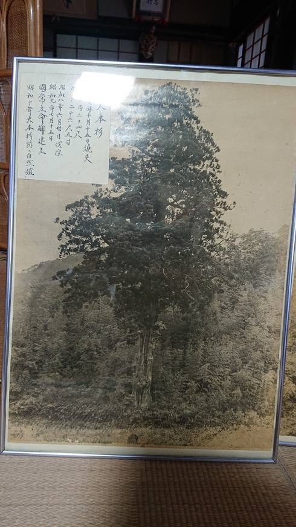
🌲 悠久の自然と歴史波多神社の境内には天を突く立派な杉の大木（御神木）が立ち並び、神聖な静寂を保っています。 かつて境内にそびえていた「八本杉」は、昭和初期まで地域を見守り続けた伝説の巨樹で、現在も記念碑や写真額として大切に語り継がれています。 悠久の年月を超えて大自然と人々の祈りが重なり合う、波多の精神的なシンボルです。
波多神社で最も賑わうのが、毎年11月14日に斎行される「秋の例大祭」です。 華やかな花笠と揃いの浴衣に身を包んだ男女が、太鼓と笛の軽やかな音色に乗って境内へと集い、神前で「はやしこ」を奉納します。 厳かな社殿と色鮮やかな衣装のコントラストは圧巻で、地域の絆と伝統の誇りが満ちあふれます。
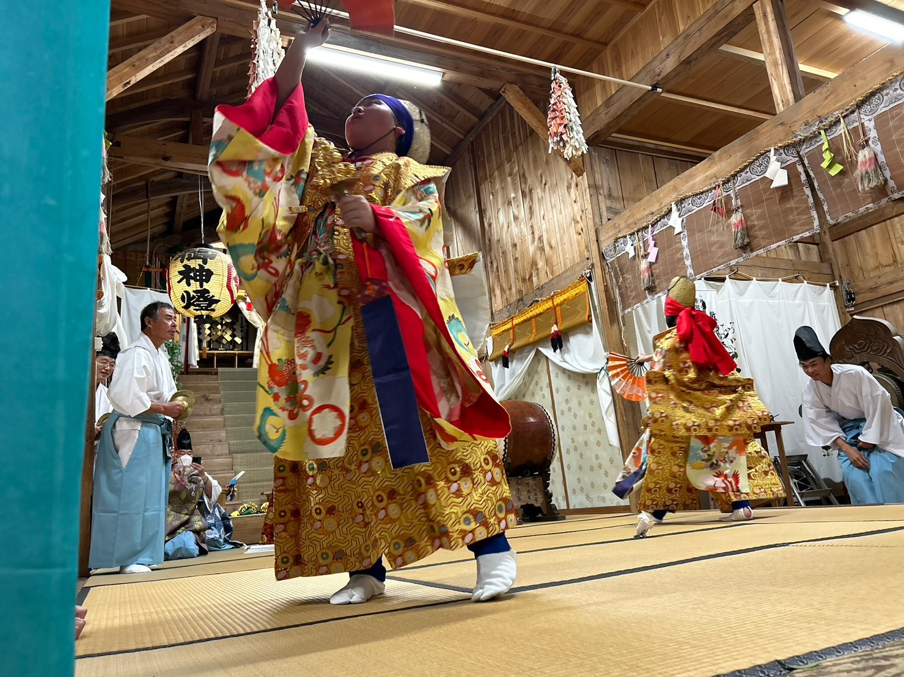
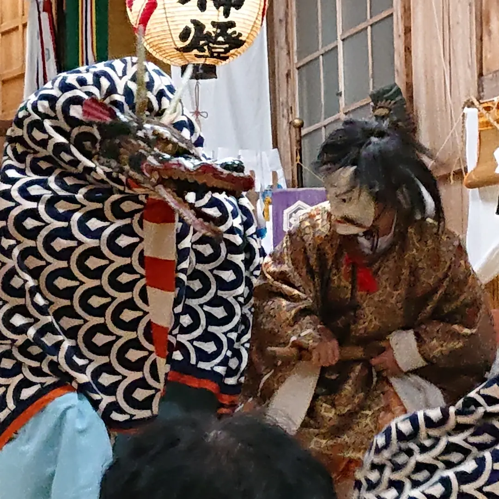
🎭 世代を紡ぐ伝統神楽波多神社には、出雲の神話世界を勇壮に表現する「波多奥飯石神楽」が伝承されています。 大蛇（オロチ）が舞い踊る迫力の舞台に加え、地域の次代を担う子どもたちが社殿で舞う「子ども神楽」も熱心に行われています。 大人から子どもへと手渡される伝統の熱意と、それを見守る地域の人々の温かい眼差しが波多神社の大きな魅力です。
波多神社の鳥居と秋祭りの情景が刻まれた、心温まる銘菓
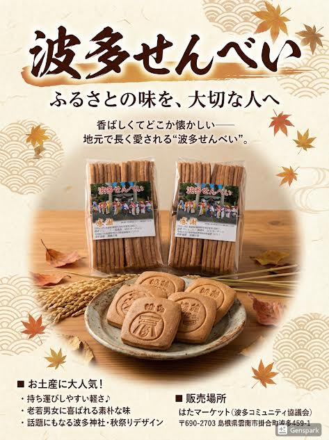
昔ながらの製法で丁寧に焼き上げられたせんべいは、噛むほどに香ばしい風味が口いっぱいに広がり、世代を問わずどなたにも愛されます。
おせんべいの一枚一枚に、波多神社の鳥居やはやしこの可愛い絵柄が焼印されており、旅の思い出やお土産の話題作りにも最適です。
個包装で軽く、日持ちもするため、大切なご家族やお友達へのプレゼント、手土産として大好評です。
はたマーケット（波多コミュニティ協議会）
島根県雲南市掛合町波多459-1（波多交流センター内）
波多温泉 満壽の湯
島根県雲南市掛合町波多1171-1
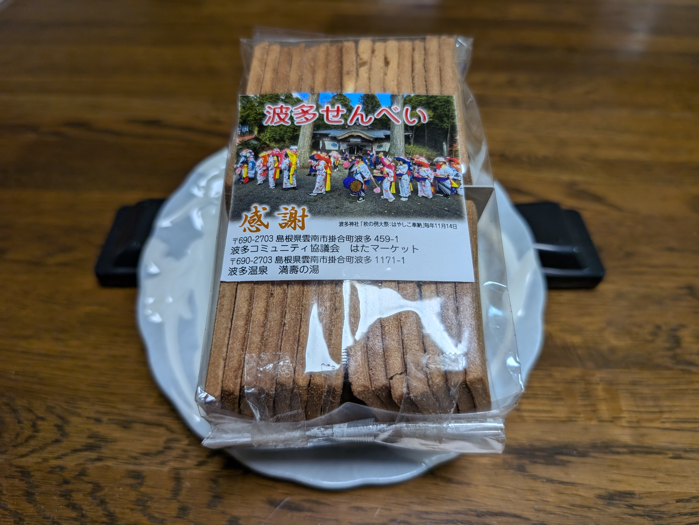
波多神社例大祭の写真ラベル波多神社、はやしこ、神楽、人の温もり。写真をクリックすると大きくご覧いただけます
夜のライトアップと神聖な雪化粧
🔍 クリックで拡大波多神社境内に咲く色鮮やかな花笠
🔍 クリックで拡大花笠と太鼓の音色が町に響き渡る
🔍 クリックで拡大真剣な眼差しで舞を紡ぐ子どもたち
🔍 クリックで拡大勇壮な出雲神楽の真髄
🔍 クリックで拡大波多神社境内にそびえた伝説の巨樹
🔍 クリックで拡大地域の温かい笑顔が集まる場所
🔍 クリックで拡大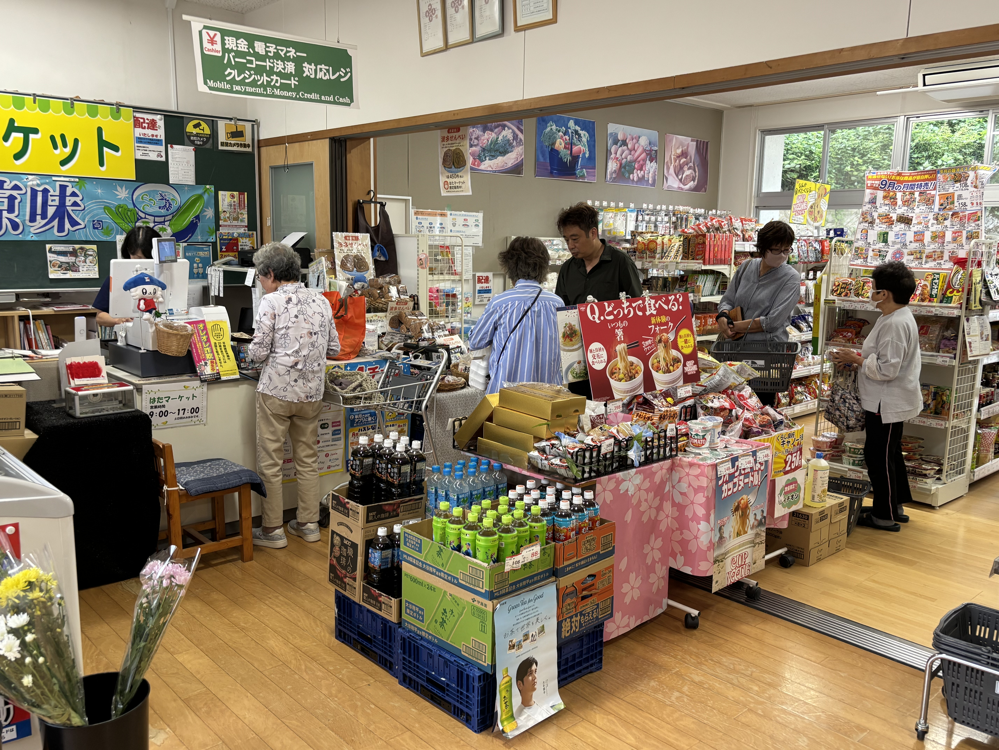
ふれあいと会話が生まれるレジ前
🔍 クリックで拡大心も体もぽかぽかに温まる名湯
🔍 クリックで拡大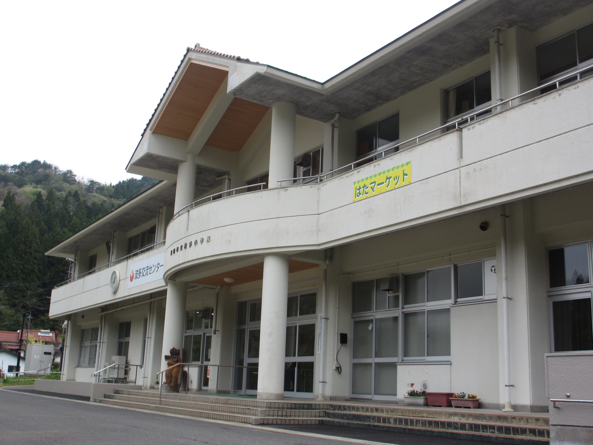
地域の想いを受け継ぐ旧校舎
🔍 クリックで拡大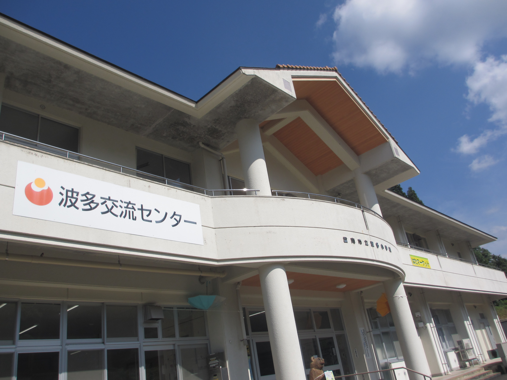
澄んだ自然に囲まれたコミュニティ
🔍 クリックで拡大波多神社とはやしこのシンボル
🔍 クリックで拡大感謝の心が詰まった手土産
🔍 クリックで拡大ふるさとの味を大切な人へ
🔍 クリックで拡大豊かな自然と温かな笑顔に出会いに、ぜひ波多へお越しください
所在地：〒690-2703 島根県雲南市掛合町波多459-1
旧波多小学校を活用した交流拠点。地元の新鮮な特産品やお土産用の「はたせんべい」をお求めいただけます。
このページは、島根県立三刀屋高等学校掛合分校の生徒による「地域探究学習」の一環として制作されました。
雲南市掛合町波多地区が誇る「自然の豊かさ」、「人の温かさ」、そして歴史ある「波多神社」や伝統芸能「はやしこ」、名物「はたせんべい」の魅力を、地域内外の多くの方に届けたいという想いで取り組んでいます。